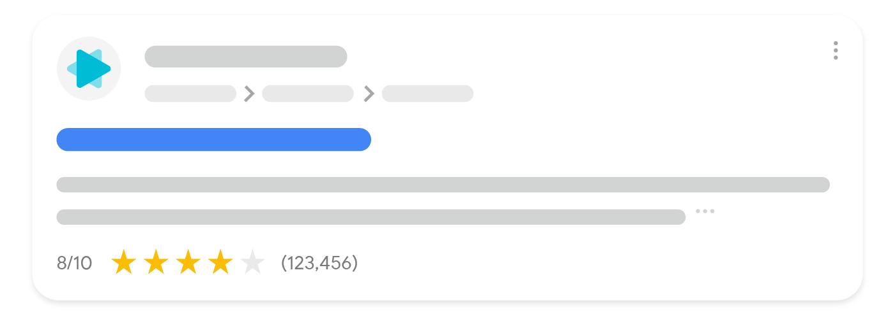
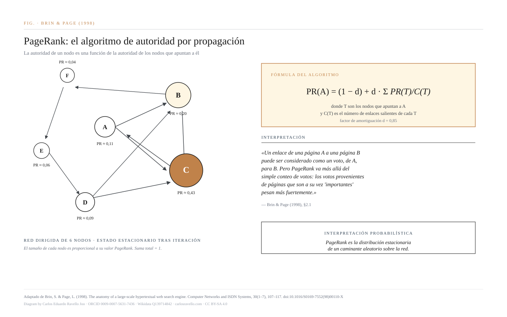
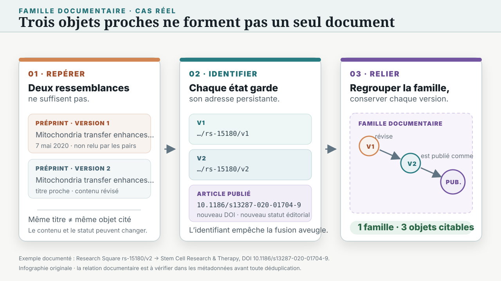
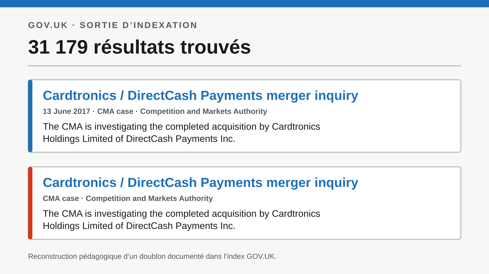
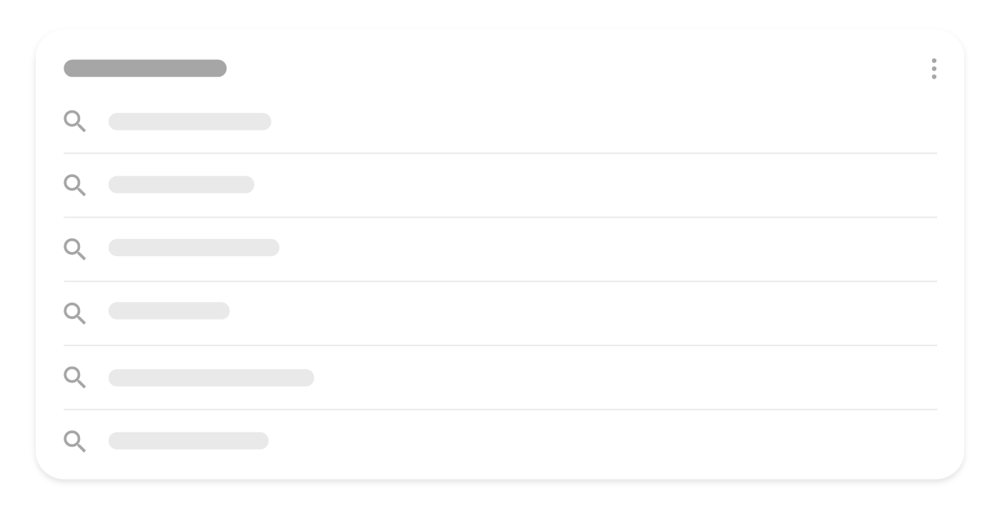

011
022
033
04REGARD
05IMPORTANCE PERÇUE
- La visibilité est distribuée de façon très inégale.
- L’interface transforme des scores en signes de confiance.
- Le clic mesure un comportement dont le sens doit être interprété.
Entre le corpus et notre regard, le système sélectionne, ordonne, résume, regroupe et parfois rédige déjà une réponse.
Une page de résultats est un montage de composants issus de circuits documentaires différents.

Un ordre résulte d’une combinaison de signaux dont le poids et même la pertinence varient selon la requête.


L’audit ne prétend pas révéler l’algorithme secret. Il compare des sorties en ne changeant qu’une condition à la fois et documente les effets visibles.

